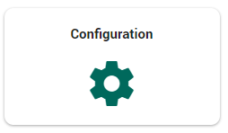
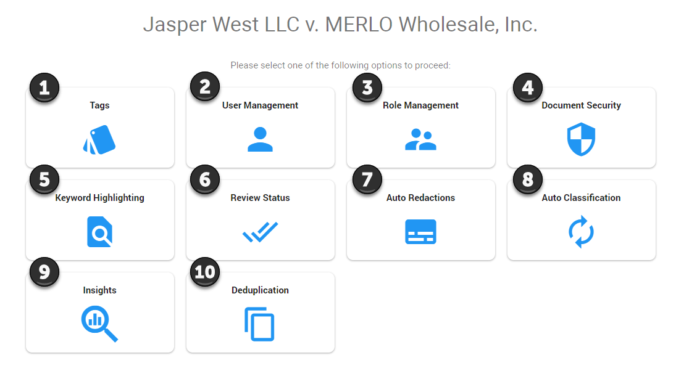

Configuration Dashboard
If you are an administrator, you will often work with the configuration dashboard. See the explanation below for more information about the different functionalities.
First, select Configuration in the Matter dashboard.

Configuration Dashboard

-
Here you can add, change and delete labels (also named ‘tags’). More information on this topic can be found in Tags.
-
Here you can add, change and delete certain roles to or from users. More information on this topic can be found in User Management.
-
Here you can add, change or delete certain roles. More information about this topic can be found in Role Management.
-
Here you can add extra security to your documents. More information on this topic can be found in Document Security.
-
Here you can highlight keywords in all your documents. More information on this topic can be found in Keyword Highlighting.
-
Here you can determine when a document will be marked as Reviewed. More information about this topic can be found in Review Status.
-
Here you can determine if information will automatically be redacted. More information about this topic can be found in Auto Redactions.
-
Here you can determine how documents can be classified automatically. More information on this topic can be found in Auto Classification.
- Here you can extract Personal Identifiable Information (PII). More information on this topic can be found in Insights.
- Here you can start your own deduplication and detect duplicate files on matter level or per custodian. More information on this topic can be found in Deduplication.